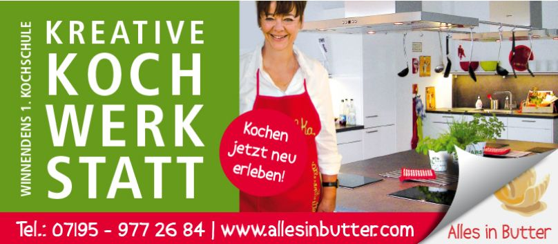

Vielen Dank für die Unterstützung!
Wir danken Organisationen und Unternehmen für ihr Engagement. Finanzielle Spenden können unter anderem den Spracherwerb, die Fahrradwerkstatt, Begegnungscafés, Warenhaus und Transport sowie Veranstaltungen unterstützen.
Kontakt für Geldspenden und Spendenbescheinigungen: Kasse-FFLW@freundeleuwi.org


